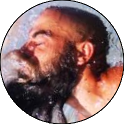

Relazione
| Data Uscita | 30-09-2023, Sabato | Area | Sardegna |
|---|---|---|---|
| Luogo di Partenza | Pinus Village - Pula (CA) | Quota |
20m la partenza 0m il percorso |
| Dislivello | 100m (circa) | Tempi | 03:30 ore (02:30 ore il percorso) |
| Esposizione | Sud-Est | Difficoltà Tecnica | V2A3 |
| Vie di Fuga | Spesso, basta risalire lato monte | Bacino Pluviale, Prese d'Acqua o Condotte | - |
| Partecipanti |
 Maurizio,
 Mike, Mike,
 Oracolo, Oracolo,
 Silvia Silvia
|
||
Accesso
Da Cagliari prendere la Strada Statale Sulcitana in direzione Sud-Ovest, uscendo dalla città, superando il porto commerciale e proseguendo sempre dritti fino al paese di Pula, che si supera. Dopo una manciata di chilometri, prima di arrivare al paese di Domus de Maria, si prende a sinistra una deviazione che scende verso il Pinus Village (cartelli). Attraversare il villaggio seguendo i sensi unici fino a dove questo finisce, dove sulla destra un comodo parcheggio lascia a poche decine di metri dal mare.
Avvicinamento
Portarsi verso il mare e imboccare sulla destra il sentiero (vecchia strada Romana) che attraversa comodamente la macchia mediterranea per circa un paio di chilometri. Giunti su di un pulpito panoramico, individuare sulla sinistra (presso una pianta) una traccia che scende molto ripidamente fino al mare, da cui per facili roccette si arriva all'inizio del percorso.
Percorso
Descriverò il percorso sommariamente, anche perchè noi ci siamo appoggiati a una guida locale, Maurizio, che opera su questo percorso tutta estate. Si inizia con facili arrampicate e tuffetti tra i 4m e i 7m, fino a una bella pozza dove ci si può rilassare un attimo. Per contattare Maurizio: Sito
Si prosegue con altri tratti in arrampicata mai difficili, qualche bella caletta con spiaggia, e una grotta a due ingressi dove è molto bello entrare da una parte a uscire dall'altra a nuoto.
Si prosegue via via guadagnando quota fino all'insenatura più grande, dove una sosta con catena darà la sicurezza di essere al punto giusto. Da qui ci sono tre possibilità: se si segue la crestina di destra si può fare un bel tuffo da 10m circa, se ci si cala dalla sosta si fa una calata da circa 12m, oppure dall'altro lato della baia c'è un'altra sosta che consente di attrezzare una divertente teleferica, da tensionare in modo giusto così da finire in acqua. Superato questo ostacolo il percorso è finito.
Ritorno
Proseguendo dritti si ritorna in breve per sentiero al Pinus Village, dove un bagno nella bella spiaggia è consigliabile.